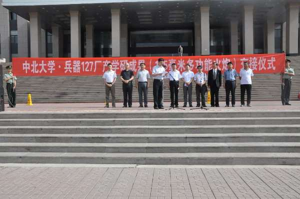
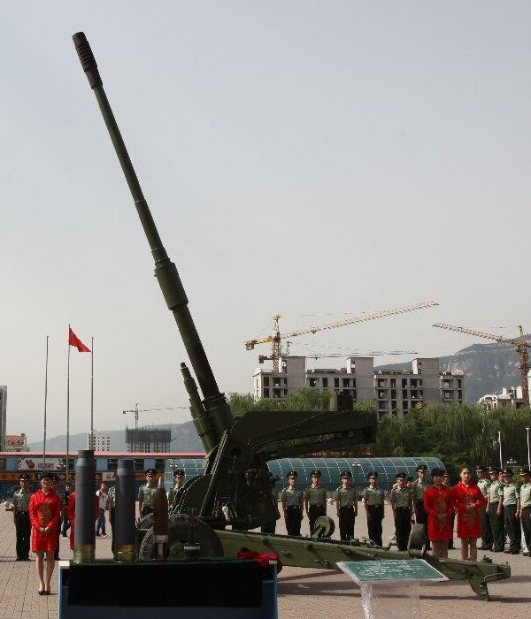
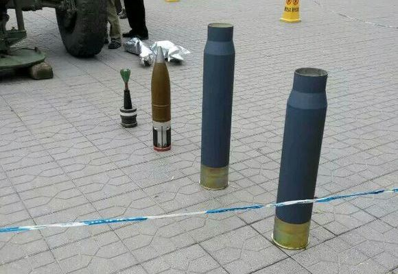

2015-07-06 10:14:00
2015年六月10日，位於山西太原的中北大學舉行了一項交接儀式，接收了來自兵器127廠（亦即同在太原的山西北方機械公司，原名山西機器局，始建於清末）的一門“125毫米多功能火炮”。因為這門火炮樣式十分先進，網絡上議論紛紛，不久《觀察者網》就刊出評論（參見http://www.guancha.cn/military-affairs/2015_06_11_322942_s.shtml），隨即美國的《Popular Science》也登出了報導（參見http://www.popsci.com/china-builds-worlds-fastest-tank-gun-then-tries-hide-it），但是兩者內容南轅北轍，意見互相衝突，我在此做個比較分析。

交接儀式的主席台。橫幅稱這門火炮為“產學研成果”。
《觀察者網》認為這是一門舊有的線膛式加榴炮，是用來研發PLZ-05和PLZ-52等新式自走炮的早期原理樣炮。《Popular Science》則認為這是一門全新的坦克炮，將用來取代99式坦克所用的ZTP-98式125毫米滑膛炮。但是這兩個理論都有很大的問題：首先一般的樣炮會採用與目標產品相同口徑和身管長，以確保內外彈道的相似性；可是這門火炮口徑是125毫米，身管長是60倍徑（即125x60=7500毫米），PLZ-05和PLZ-52卻都是155毫米口徑、身管長52倍徑（即155x52=8060毫米）的火炮。然而如果如美國人所猜測，這是一門坦克炮，那麼它就應該是滑膛的（坦克炮首重穿甲能力，所以初速越高越好，而滑膛炮的阻力小、初速高，自1960年代蘇聯率先採用之後，全世界的新坦克炮都是滑膛的），而且主要發射APFSDS彈藥（Armor-Piercing Fin-Stablized Discarding-Sabot，即次口徑的飛鏢彈）。不過APFSDS對炮口制退器（Muzzle Supressor）非常敏感，所以現代的坦克炮都沒有裝炮口制退器；這門火炮卻裝了一個龐大的炮口制退器，看來是德國PzH-2000型自走炮的山寨版。

交接儀式中，從主席台向外看的照片。請注意龐大的砲口制退器，是PzH-2000的翻版，共軍自用和外銷的多種火炮都沒有使用這型砲口制退器的記錄。炮管中段的突起是抽煙器，代表著這款火炮是為裝甲車設計的，不是真正的牽引式火炮。照片中的牽引架是共軍66式加榴砲的現成砲架，顯然是樣炮測試期間將就搭配用的。液壓高低機連接到炮架上後方，液壓制退管在炮管下方，都是典型的自走炮設計。仰角可以高達80度左右，跟坦克炮完全不同。

這是配套彈藥的近照。請注意它們是一體式彈藥，而共軍所有現役的125毫米坦克炮和155毫米自走砲都使用兩段分裝式的彈藥。最左邊的彈頭就是APFSDS，但是飛鏢的長徑比還不到10，而現代所有坦克炮所用的APFSDS長徑比都在25到50之間；反過來說，如果這是自走炮，就完全不會需要APFSDS。所以這是一件很難解釋的怪事。《觀察者網》無法解釋現場的APFSDS彈藥，也不能解釋為什麼裝藥是一體式，更不能解釋“多功能”是什麼意思，所以只猜測彈藥是隨便拿來而拿錯的。奇怪的是共軍並沒有現成的一體式125毫米彈藥，所以127廠從哪裡拿錯來著是個無解的謎題。《Popular Science》錯得更離譜，把液壓高低機和液壓制退器都搞反了，顯然作者是完全不入流的門外漢。這個APFSDS彈頭的長徑比如此之低，其穿甲能力必然遠低於ZTP-98所發射的彈頭，要替換後者真不知從何說起。而且對共軍的保密傳統稍有常識的人都應該知道，這門火炮若不是徹底過時，是不可能如此高規格地公開做交接儀式的。
這是一個很有意思的謎題，我仔細想了幾天，才得到一個面面俱到的答案。請注意，127廠是北方機械公司，屬於中國兵器工業第一機械集團，而PLZ-05和PLZ-52的製造商是北方工業公司（Norinco，中國最大的裝甲車輛和火炮製造商），那要比北方機械大多了。所以這門炮的確是一門舊式的線膛炮，但是應該是北方機械公司內部的實驗品，和北方工業公司的PLZ-05和PLZ-52一點關係都沒有。因為是實驗品而不是原理樣炮，所以可以什麼都嘗試，包括共軍自動裝彈機還不能處理的一體式彈藥。雖然它主要是為自走炮設計的，但是有人在實驗期間突發奇想，做了一個簡單的APFSDS來試試看（其實一體式彈藥的最大優點就在於可以容納長徑比高達50的APFSDS，可是反正線膛和炮口制退器已經保證它不適合做專業的坦克炮，就只是試著玩兒），於是這門火炮就成了“多功能”的。這門火炮的製造年份也可以估計得出來。PzH-2000是1996年定型的，所以中北大學的設計團隊應該是在1996年之後才山寨了它的砲口制退器。Norinco是自1990年代後期開始應共軍的要求而研發PLZ-05，所以127廠有可能也是為了投標同一時期的裝備需求而和中北大學合作的。總之這門火炮大約已經是15年舊了。共軍最後顯然對這型新口徑（現役火炮是122毫米口徑的）、新彈藥的自走炮一點興趣都沒有，所以127廠實驗做完後，擺了幾年，幹脆把它送還給中北大學做紀念。
以上是我的猜測，讀者認為還合理嗎？
【後註】從一份讀者給的新聞稿來判斷，似乎我猜錯了一個細節：這門炮是2011才立項的，現在計劃還在進行中。那麼這個交接就可能是反過來由中北大學正式交貨給127廠。那位讀者認為軍方是交接對象，我覺得可能性很小。首先沒有軍官在主席台上；其次一個還在進行中的研究計劃，共軍是不會公開舉行儀式的。
如果這門火炮真是在2011年才立項，各種實驗或許還未結束。不過它在技術方面四不像的特徵，仍然說明這是一個純粹的早期實驗品，沒有直接實用化的可能。例如它雖是“多功能”的，但是主要是一門自走炮，所以採用一體式彈藥沒有好處（只有坦克炮的一體式彈藥可以配套長徑比更高的APFSDS，所以性能優於分段式彈藥），徒然造成裝彈的困難。共軍至今仍未開發出PzH-2000所用的那類自動裝彈機，部分原因是它佔的空間更大，沒有性能優勢就不值得。